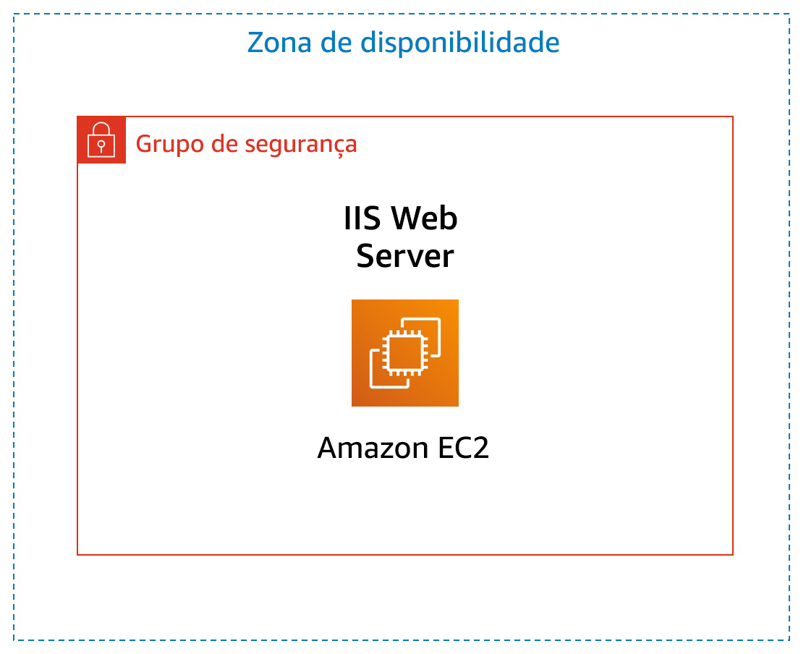

Laboratório 3: Introdução ao Amazon EC2
Versão 1.1.7 (spl200)
Visão geral

Este laboratório apresenta uma visão geral básica de como executar, redimensionar, gerenciar e monitorar uma instância do Amazon EC2.
O Amazon Elastic Compute Cloud (Amazon EC2) é um serviço da Web que fornece capacidade computacional redimensionável na nuvem. Ele foi projetado para facilitar aos desenvolvedores a computação em nuvem na escala da Web.
A interface de Web service simples do Amazon EC2 permite que você obtenha e configure capacidade com o mínimo de esforço. Ela oferece um controle completo de seus recursos de computação e permite a execução no ambiente de computação comprovado da Amazon. O Amazon EC2 reduz o tempo necessário para obter e inicializar novas instâncias do servidor em minutos, permitindo o rápido escalonamento da capacidade para mais ou para menos, de acordo com a evolução dos requisitos de computação.
O Amazon EC2 altera a economia da computação, permitindo que você pague somente pela capacidade que realmente utiliza. O Amazon EC2 oferece aos desenvolvedores as ferramentas para criar aplicativos resistentes a falhas e isolá-los de situações de falha comuns.
Tópicos abordados
Ao final deste laboratório, você será capaz de:
- Executar um servidor web com proteção contra encerramento habilitada
- Monitorar sua instância EC2
- Modificar o grupo de segurança que seu servidor web está usando para permitir acesso HTTP
- Redimensionar sua instância Amazon EC2 de acordo com a necessidade
- Explorar os limites do EC2
- Testar a proteção contra encerramento
- Encerrar sua instância EC2
Duração
O laboratório levará aproximadamente 35 minutos para ser concluído.
Acessar o Console de Gerenciamento da AWS
Na parte superior destas instruções, clique em Start Lab (Iniciar laboratório) para iniciar o laboratório.
Um painel Start Lab (Iniciar laboratório) é aberto exibindo o status do laboratório.
Aguarde até que a mensagem “Lab status: ready (Status do laboratório: pronto)” seja exibida e clique no X para fechar o painel Start Lab (Iniciar laboratório).
Na parte superior destas instruções, clique em AWS
Isso abrirá o Console de Gerenciamento da AWS em uma nova guia do navegador. O sistema fará o seu login automaticamente.
Dica: se uma nova guia do navegador não for aberta normalmente, um banner ou um ícone na parte superior do navegador indicará que o navegador está impedindo que o site abra janelas pop-up. Clique no banner ou ícone e escolha "Allow pop ups" (Permitir pop-ups).
Organize a guia do Console de Gerenciamento da AWS para que ela seja exibida com estas instruções. Em um cenário ideal, você poderá ver as duas guias do navegador ao mesmo tempo, para facilitar o acompanhamento das etapas do laboratório.
Tarefa 1: Executar a instância do Amazon EC2
Nesta tarefa, você executará uma instância do Amazon EC2 com proteção contra encerramento. A proteção contra encerramento impede que você encerre acidentalmente uma instância do EC2. Você implantará sua instância com um script de dados do usuário que permitirá implantar um servidor da Web simples.
- No Console de Gerenciamento da AWS, no menu Services (Serviços), clique em EC2.
- Clique em Launch instance (Executar instância) e selecione Launch instance (Executar instância)
Etapa 1: Escolher uma imagem de máquina da Amazon (AMI)
Uma imagem de máquina da Amazon (AMI) fornece as informações necessárias para executar uma instância, que é um servidor virtual na nuvem. Uma AMI inclui:
- Um modelo para o volume raiz da instância (por exemplo, um sistema operacional ou um servidor de aplicativos com aplicativos)
- Permissões de execução que controlam quais contas da AWS podem usar a AMI para executar instâncias
- Um mapeamento de dispositivos de blocos que especifica quais volumes devem ser associados à instância quando ela for executada
A lista Quick Start (Início rápido) contém as AMIs mais usadas. Você também pode criar sua própria AMI ou selecionar uma AMI no AWS Marketplace, uma loja online na qual você pode vender ou comprar software executado na AWS.
- Clique em Select (Selecionar) ao lado de Amazon Linux 2 AMI (AMI do Amazon Linux 2) (na parte superior da lista).
Etapa 2: Escolher um tipo de instância
O Amazon EC2 fornece uma ampla seleção de tipos de instância otimizados para atender a diferentes casos de uso. Os tipos de instância compreendem combinações variadas de capacidade de CPU, memória, armazenamento e rede e oferecem a flexibilidade de escolher a combinação adequada de recursos para suas aplicações. Cada tipo de instância inclui um ou mais tamanhos de instância, permitindo que você dimensione seus recursos de acordo com os requisitos da sua meta de carga de trabalho.
Você usará uma instância t2.micro, que deve estar selecionada por padrão. Esse tipo de instância tem uma CPU virtual e 1 GiB de memória. OBSERVAÇÃO: talvez você não possa usar outros tipos de instância neste laboratório.
- Clique em Next: Configure Instance Details (Próximo: Configurar detalhes da instância)
Etapa 3: Configurar detalhes da instância
Esta página é usada para configurar a instância de acordo com seus requisitos. Isso inclui configurações de redes e monitoramento.
A Network (Rede) indica em qual Virtual Private Cloud (VPC) você deseja executar a instância. Você pode ter várias redes diferentes, por exemplo, para desenvolvimento, teste e produção.
Em Network (Rede), selecione Lab VPC (VPC de laboratório).
A VPC de laboratório foi criada com base em um modelo do AWS CloudFormation durante o processo de configuração do laboratório. Essa VPC inclui duas sub-redes públicas em duas zonas de disponibilidade diferentes.
Em Enable termination protection (Habilitar proteção contra encerramento), selecione Protect against accidental termination (Proteger contra encerramento acidental).
Quando uma instância do Amazon EC2 não é mais necessária, ela pode ser encerrada, o que significa que a instância é interrompida e seus recursos são liberados. Uma instância encerrada não pode ser iniciada novamente. Se quiser evitar que a instância seja encerrada acidentalmente, você poderá habilitar a proteção contra encerramento para a instância, o que impede que ela seja encerrada.
- Role para baixo e expanda Advanced Details (Detalhes avançados).
Um campo para User data (Dados do usuário) será exibido.
Ao executar uma instância, você pode passar os dados do usuário para a instância, que podem ser usados para realizar tarefas de configuração automatizadas comuns e até para executar scripts após a inicialização da instância.
A instância executa o Amazon Linux, portanto, você fornecerá um script do shell, que será executado quando a instância for iniciada.
Copie os seguintes comandos e cole-os no campo User data (Dados do usuário):
#!/bin/bashyum -y install httpdsystemctl enable httpdsystemctl start httpdecho '<html><h1>Hello From Your Web Server!</h1></html>' > /var/www/html/index.htmlO script:
- Instalará um servidor Web Apache (httpd)
- Configurará o servidor Web para iniciar automaticamente na inicialização
- Ativará o servidor Web
- Criará uma página da Web simples
- Clique em Next: Add Storage (Próximo: Adicionar armazenamento)
Etapa 4: Adicionar armazenamento
O Amazon EC2 armazena dados em um disco virtual associado à rede chamado de Elastic Block Store.
Você executará a instância do Amazon EC2 usando um volume de disco padrão de 8 GiB. Esse será o volume raiz (também conhecido como volume de “inicialização”).
- Clique em Next: Add Tags (Próximo: Adicionar tags).
Etapa 5: Adicionar tags
As tags permitem categorizar os recursos da AWS de várias maneiras, por exemplo, por finalidade, proprietário ou ambiente. Isso é útil quando você tem muitos recursos do mesmo tipo. É possível identificar rapidamente um recurso específico com base nas tags que você atribuiu a ele. Cada tag consiste em uma chave e um valor, ambos definidos por você.
- Clique em Add Tag (Adicionar tag) e configure:
- Key (Chave):
Name (Nome) - Value (Valor):
Web Server (Servidor da Web)
- Clique em Next: Configure Security Group (Próximo: Configurar grupo de segurança)
Etapa 6: Configurar grupo de segurança
Um grupo de segurança atua como um firewall virtual que controla o tráfego para uma ou mais instâncias. Ao executar uma instância, você pode associar um ou mais grupos de segurança a ela. Você adiciona regras a cada grupo de segurança que permitem o tráfego de entrada ou de saída das instâncias associadas. É possível modificar as regras para um grupo de segurança a qualquer momento. As novas regras são aplicadas automaticamente a todas as instâncias associadas ao grupo de segurança.
- Na Etapa 6: Configurar grupo de segurança, configure:
- O nome do grupo de segurança:
Web Server security group (Grupo de segurança do servidor da Web) - Description (Descrição):
Security group for my web server (Grupo de segurança do meu servidor da Web)
Neste laboratório, você não fará login em sua instância usando SSH. A remoção do acesso SSH reforçará a segurança da instância.
- Exclua a regra de SSH existente.
- Clique em Review and Launch (Verificar e iniciar)
Etapa 7: Revisar a execução da instância
A página Review (Revisão) exibe a configuração da instância que você está prestes a executar.
- Clique em Launch (Executar).
A janela Select an existing key pair or create a new key pair (Selecionar um par de chaves existente ou criar um novo par) será exibida.
O Amazon EC2 utiliza criptografia de chave pública para criptografar e descriptografar as informações de login. Para fazer login na sua instância, você deve criar um par de chaves, especificar o nome dele ao executar a instância e inserir a chave privada ao se conectar à instância.
Neste laboratório, você não fará login na instância e, portanto, não precisará de um par de chaves.
- Clique no menu suspenso Choose an existing key pair (Escolher um par de chaves existente) e selecione Proceed without a key pair (Continuar sem um par de chaves).
- Selecione I acknowledge that... (Eu confirmo que...).
- Clique em Launch Instances (Executar instâncias)
Agora sua instância será executada.
- Clique em View Instances (Visualizar instâncias).
A instância aparecerá em um estado pending (pendente), o que significa que ela está sendo iniciada. Em seguida, ele será alterado para running (em execução), o que indica que a instância foi inicializada. Depois de um curto período, você poderá acessá-la.
A instância recebe um nome DNS público, que você pode usar para acessá-la pela Internet.
O servidor da Web deve estar selecionado. A guia Description (Descrição) exibe informações detalhadas da instância.
Para visualizar mais informações na guia Description (Descrição), arraste o divisor da janela para cima.
Leia as informações exibidas na guia Description (Descrição). Ela inclui informações sobre o tipo de instância e as configurações de segurança e de rede.
- Aguarde até que a instância exiba o seguinte:
- Instance State (Estado da instância): running (em execução)
- Status Checks (Verificações de status): 2/2 checks passed (2/2 verificações aprovadas)
Parabéns! Você executou com êxito sua primeira instância do Amazon EC2.
Tarefa 2: Monitorar a instância
O monitoramento é uma parte importante para manter a confiabilidade, disponibilidade e performance das instâncias do Amazon Elastic Compute Cloud (Amazon EC2) e das soluções da AWS.
- Clique na guia Status Checks (Verificações de status).
Com o monitoramento de status de instâncias, você pode rapidamente determinar se o Amazon EC2 detectou problemas que podem impedir suas instâncias de executar aplicações. O Amazon EC2 realiza verificações automáticas em cada instância do EC2 em execução para identificar problemas de hardware e software.
Observe que as verificações System reachability (Acessibilidade do sistema) e Instance reachability (Acessibilidade da instância) foram aprovadas.
- Clique na guia Monitoring (Monitoramento).
Essa guia exibe as métricas do Amazon CloudWatch para sua instância. Atualmente, não há muitas métricas para exibir porque a instância foi executada recentemente.
Clique em um gráfico para acessar uma visualização expandida.
O Amazon EC2 envia métricas para o Amazon CloudWatch referentes às suas instâncias EC2. Por padrão, o monitoramento básico (cinco minutos) está habilitado. Você pode habilitar o monitoramento detalhado (um minuto).
- No menu Actions (Ações), selecione Monitor and troubleshoot (Monitorar e solucionar problemas) Get System Log (Obter log do sistema).
O log do sistema exibe a saída do console da instância, que é uma ferramenta essencial para o diagnóstico de problemas. É especialmente útil para resolver problemas de kernel e problemas de configuração de serviço que possam fazer com que uma instância seja encerrada ou torne-se inalcançável antes de seu daemon SSH ser iniciado. Se você não vir um log do sistema, aguarde alguns minutos e, em seguida, tente novamente.
- Examine os resultados e observe que o pacote HTTP foi instalado a partir dos dados do usuário que você adicionou quando criou a instância.

- Escolha Cancel (Cancelar).
- No menu Actions (Ações), selecione Monitor and troubleshoot (Monitorar e solucionar problemas) Get Instance Screenshot (Obter captura de tela da instância)
Isso mostra como seria o console da instância do Amazon EC2, se uma tela fosse adicionada a ele.

Se você não conseguir acessar sua instância por SSH ou RDP, poderá fazer uma captura de tela da sua instância e visualizá-la como imagem. Esse procedimento oferece visibilidade do status da instância e permite uma resolução de problemas mais rápida.
- Escolha Cancel (Cancelar).
Parabéns! Você explorou várias maneiras de monitorar sua instância.
Tarefa 3: Atualizar o grupo de segurança e acessar o servidor da Web
Ao executar a instância EC2, você forneceu um script que instalou um servidor web e criou uma página da web simples. Nesta tarefa, você acessará o conteúdo do servidor da Web.
- Clique na guia Details (Detalhes).
- Copie o IPv4 Public IP (IP Público IPv4) da instância para a área de transferência.
- Abra uma nova guia no navegador da Web, cole o endereço IP que você acabou de copiar e pressione Enter.
Pergunta: você consegue acessar seu servidor da Web? Por que não?
Você não consegue acessar seu servidor da Web neste momento porque o grupo de segurança não está permitindo o tráfego de entrada na porta 80, que é usada para solicitações da web HTTP. Essa é uma demonstração do uso de um grupo de segurança como firewall para restringir o tráfego de entrada e saída da instância em uma rede.
Para corrigir isso, você atualizará o grupo de segurança para permitir o tráfego da Web na porta 80.
- Mantenha a guia do navegador aberta, mas volte para a guia EC2 Management Console (Console de gerenciamento do EC2).
- No painel de navegação esquerdo, clique em Security Groups (Grupos de segurança).
- Selecione Web Server security group (Grupo de segurança do servidor da Web).
- Clique na guia Inbound (Entrada).
No momento, o grupo de segurança não tem regras.
- Clique em Edit rules (Editar regras) e configure:
- Type (Tipo): HTTP
- Source (Fonte): Anywhere (Qualquer lugar)
- Clique em Save rules (Salvar regras)
- Volte para a guia do servidor Web que você abriu anteriormente e atualize a página.
Você deve ver a mensagem Hello From Your Web Server! (Olá do seu servidor da Web!)
Parabéns! Você modificou com êxito o grupo de segurança para permitir tráfego HTTP de entrada em sua instância do Amazon EC2.
Tarefa 4: Redimensionar a instância - tipo de instância e volume EBS
À medida que suas necessidades mudam, você pode avaliar que sua instância está sendo utilizada em excesso (muito pequena) ou subutilizada (muito grande). Se isso acontecer, você poderá alterar o tipo de instância. Por exemplo, se uma instância t2.micro for muito pequena para sua carga de trabalho, você poderá alterá-la para uma instância m5.medium. Da mesma forma, também poderá alterar o tamanho de um disco.
Interromper a instância
Antes de redimensionar uma instância, você deve interrompê-la.
Quando você interrompe uma instância, ela é desligada. Não há cobrança para uma instância EC2 interrompida, mas a cobrança de armazenamento para volumes do Amazon EBS associados permanece.
- No EC2 Management Console (Console de gerenciamento do EC2), no painel de navegação esquerdo, clique em Instances (Instâncias).
O servidor Web já deve estar selecionado.
- No menu Instance State (Estado da instância), selecione Stop instance (Parar instância).
- Escolha Stop (Parar)
A instância executará um desligamento normal e, em seguida, interromperá a execução.
- Aguarde até que o Instance State (Estado da instância) exiba: stopped (interrompido)
Alterar o tipo de instância
- No menu Actions (Ações), selecione Instance Settings (Configurações da instância) Change Instance Type (Alterar tipo de instância) e configure:
- Instance type (Tipo de instância): * t2.small*
- Clique em Apply (Aplicar).
Quando a instância for iniciada novamente, ela será uma t2.small, que tem duas vezes mais memória que uma instância t2.micro. OBSERVAÇÃO: talvez você não possa usar outros tipos de instância neste laboratório.
Redimensionar o volume EBS
- No menu de navegação esquerdo, clique em Volumes.
- No menu Actions (Ações), selecione Modify Volume (Modificar volume).
Atualmente, o volume do disco é de 8 GiB. Agora, você aumentará o tamanho desse disco.
- Altere o tamanho para:
10OBSERVAÇÃO: talvez você não possa criar grandes volumes do Amazon EBS neste laboratório. - Selecione Modify (Modificar).
- Clique em Yes (Sim) para confirmar e aumentar o tamanho do volume.
- Clique em Close (Fechar)
Iniciar a instância redimensionada
Neste momento, você iniciará a instância novamente, que agora terá mais memória e mais espaço em disco.
- No painel de navegação esquerdo, clique em Instances (Instâncias).
- No menu Instance State (Estado da instância), selecione Start instance (Iniciar instância).
- Selecione Start (Iniciar)
Parabéns! Você redimensionou com êxito sua instância do Amazon EC2. Nessa tarefa, você alterou o tipo de instância de t2.micro para t2.small. Você também modificou o volume do disco raiz de 8 GiB para 10 GiB.
Tarefa 5: Explorar os limites do EC2
O Amazon EC2 oferece recursos diferentes que você pode usar. Esses recursos incluem imagens, instâncias, volumes e snapshots. Quando você cria uma conta da AWS, há limites padrão para esses recursos, de acordo com a região.
- No painel de navegação esquerdo, clique em Limits (Limites).
- Na lista suspensa, escolha Running instances (Execução de instâncias).
Observe que há um limite no número de instâncias que você pode iniciar nesta região. Ao executar uma instância, a solicitação não deve fazer com que seu uso exceda o limite de instâncias atual nessa região.
É possível solicitar o aumento de muitos desses limites.
Tarefa 6: Testar a proteção contra encerramento
Você pode excluir sua instância quando não precisar mais dela. Esse procedimento é chamado de encerramento da instância. Você não poderá se conectar ou reiniciar uma instância depois que ela tiver sido encerrada.
Nesta tarefa, você aprenderá a usar a proteção contra encerramento.
- No painel de navegação esquerdo, clique em Instances (Instâncias).
- No menu Instance State (Estado da instância), selecione Terminate instance (Encerrar instância).
- Em seguida, escolha Terminate (Encerrar)
Observe que há uma mensagem informando: Failed to terminate the instance i-1234567xxx. The instance 'i-1234567xxx' may not be terminated. Modify its 'disableApiTermination' instance attribute and try again (Falha ao encerrar a instância i-1234567xxx. Não é possível encerrar a instância “i-1234567xxx”. Modifique o atributo “disableApiTermination”da instância e tente novamente).
Essa é uma proteção para evitar o encerramento acidental de uma instância. Se você realmente desejar encerrar a instância, será necessário desabilitar a proteção de encerramento.
- No menu Actions (Ações), selecione Instance Settings (Configurações da instância) Change Termination Protection (Alterar proteção contra encerramento).
- Remova a seleção ao lado de Enable (Habilitar)
- Clique em Salve (Salvar)
Agora você pode encerrar a instância.
- No menu Instance State (Estado da instância), selecione Terminate (Encerrar).
- Escolha Terminate (Encerrar)
Parabéns! Você testou com êxito a proteção contra encerramento e encerrou sua instância.
Laboratório concluído
Parabéns! Você concluiu o laboratório.
- Clique em End Lab (Encerrar laboratório) na parte superior desta página e, em seguida, clique em Yes (Sim) para confirmar que você deseja encerrar o laboratório.
Um painel será exibido com a mensagem: "DELETE has be initiated... You may close this message box now." (a EXCLUSÃO foi iniciada... Você pode fechar esta caixa de mensagem agora).
- Clique no X no canto superior direito para fechar o painel.
Envie um e-mail com feedback, sugestões ou correções para: aws-course-feedback@amazon.com
Recursos adicionais
- Executar sua instância
- Tipos de instância Amazon EC2
- Imagens de máquina da Amazon (AMIs)
- Amazon EC2 - Dados do usuário e scripts de shell
- Volume do dispositivo raiz do Amazon EC2
- Como atribuir tags aos seus recursos do Amazon EC2
- Grupos de segurança
- Pares de chaves do Amazon EC2
- Verificações de status para suas instâncias
- Como acessar a saída do console e reinicializar instâncias
- Métricas e dimensões do Amazon EC2
- Como redimensionar a instância
- Interromper e iniciar a instância
- Limites de serviço do Amazon EC2
- Encerrar sua instância
- Proteção contra encerramento de uma instância